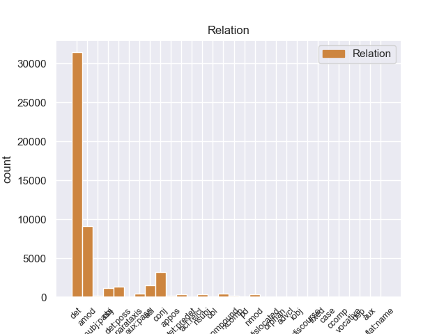
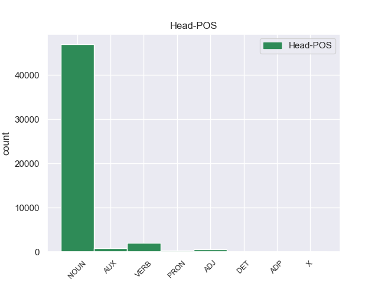
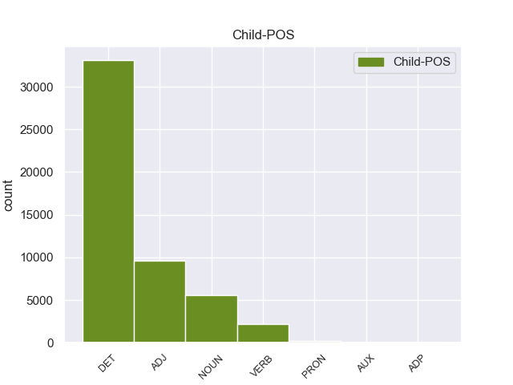

Distribution of features within this leaf



Agreement Rules sorted by frequency.
- When the dependent token is the determiner(det) of the head token, and the dependent token is DET.
1 Mohammad _ _ _ _ 0 _ _ _
2 Khatami _ _ _ _ 0 _ _ _
3 , _ _ _ _ 0 _ _ _
4 il _ _ _ _ 0 _ _ _
5 presidente _ _ _ _ 0 _ _ _
6 di _ _ _ _ 0 _ _ _
7 l’ _ _ _ _ 0 _ _ _
8 Iran _ _ _ _ 0 _ _ _
9 , _ _ _ _ 0 _ _ _
10 si _ _ _ _ 0 _ _ _
11 è _ _ _ _ 0 _ _ _
12 impegnato _ _ _ _ 0 _ _ _
13 a _ _ _ _ 0 _ _ _
14 ricostruire _ _ _ _ 0 _ _ _
15 il _ _ _ _ 0 _ _ _
16 centro _ _ _ _ 0 _ _ _
17 di _ _ _ _ 0 _ _ _
18 la il DET -- Definite=Def|Gender=Fem|Number=Sing|PronType=Art 19 det _ _
19 città città NOUN -- Gender=Fem 0 _ _ _
20 di _ _ _ _ 0 _ _ _
21 Bam _ _ _ _ 0 _ _ _
22 entro _ _ _ _ 0 _ _ _
23 2 _ _ _ _ 0 _ _ _
24 anni _ _ _ _ 0 _ _ _
25 . _ _ _ _ 0 _ _ _
1 Gli _ _ _ _ 0 _ _ _
2 edifici _ _ _ _ 0 _ _ _
3 di _ _ _ _ 0 _ _ _
4 il _ _ _ _ 0 _ _ _
5 centro _ _ _ _ 0 _ _ _
6 storico _ _ _ _ 0 _ _ _
7 erano _ _ _ _ 0 _ _ _
8 costruiti _ _ _ _ 0 _ _ _
9 con _ _ _ _ 0 _ _ _
10 l’ _ _ _ _ 0 _ _ _
11 argilla argilla NOUN -- Gender=Fem|Number=Sing 0 _ _ _
12 rossa rosso ADJ -- Gender=Fem|Number=Sing 11 amod _ _
13 di _ _ _ _ 0 _ _ _
14 il _ _ _ _ 0 _ _ _
15 deserto _ _ _ _ 0 _ _ _
16 , _ _ _ _ 0 _ _ _
17 un _ _ _ _ 0 _ _ _
18 materiale _ _ _ _ 0 _ _ _
19 molto _ _ _ _ 0 _ _ _
20 fragile _ _ _ _ 0 _ _ _
21 . _ _ _ _ 0 _ _ _
1 Su _ _ _ _ 0 _ _ _
2 le _ _ _ _ 0 _ _ _
3 barche _ _ _ _ 0 _ _ _
4 i _ _ _ _ 0 _ _ _
5 turisti _ _ _ _ 0 _ _ _
6 possono _ _ _ _ 0 _ _ _
7 ascoltare _ _ _ _ 0 _ _ _
8 la _ _ _ _ 0 _ _ _
9 descrizione descrizione NOUN -- Gender=Fem|Number=Sing 0 _ _ _
10 e _ _ _ _ 0 _ _ _
11 la _ _ _ _ 0 _ _ _
12 storia storia NOUN -- Gender=Fem|Number=Sing 9 conj _ _
13 di _ _ _ _ 0 _ _ _
14 i _ _ _ _ 0 _ _ _
15 monumenti _ _ _ _ 0 _ _ _
16 che _ _ _ _ 0 _ _ _
17 si _ _ _ _ 0 _ _ _
18 vedono _ _ _ _ 0 _ _ _
19 da _ _ _ _ 0 _ _ _
20 il _ _ _ _ 0 _ _ _
21 fiume _ _ _ _ 0 _ _ _
22 . _ _ _ _ 0 _ _ _
1 Il _ _ _ _ 0 _ _ _
2 riso _ _ _ _ 0 _ _ _
3 integrale _ _ _ _ 0 _ _ _
4 , _ _ _ _ 0 _ _ _
5 cioè _ _ _ _ 0 _ _ _
6 il _ _ _ _ 0 _ _ _
7 riso _ _ _ _ 0 _ _ _
8 con _ _ _ _ 0 _ _ _
9 i _ _ _ _ 0 _ _ _
10 chicchi chicco NOUN -- Gender=Masc|Number=Plur 0 _ _ _
11 coperti coprire VERB -- Gender=Masc|Number=Plur|Tense=Past|VerbForm=Part 10 acl _ _
12 da _ _ _ _ 0 _ _ _
13 la _ _ _ _ 0 _ _ _
14 buccia _ _ _ _ 0 _ _ _
15 , _ _ _ _ 0 _ _ _
16 contiene _ _ _ _ 0 _ _ _
17 anche _ _ _ _ 0 _ _ _
18 molta _ _ _ _ 0 _ _ _
19 fibra _ _ _ _ 0 _ _ _
20 . _ _ _ _ 0 _ _ _
1 Per _ _ _ _ 0 _ _ _
2 visitare _ _ _ _ 0 _ _ _
3 le _ _ _ _ 0 _ _ _
4 mostre _ _ _ _ 0 _ _ _
5 possiamo _ _ _ _ 0 _ _ _
6 acquistare _ _ _ _ 0 _ _ _
7 il _ _ _ _ 0 _ _ _
8 biglietto _ _ _ _ 0 _ _ _
9 il _ _ _ _ 0 _ _ _
10 giorno _ _ _ _ 0 _ _ _
11 stesso _ _ _ _ 0 _ _ _
12 di _ _ _ _ 0 _ _ _
13 la _ _ _ _ 0 _ _ _
14 nostra nostro DET -- Gender=Fem|Number=Sing|Poss=Yes|PronType=Prs 15 det:poss _ _
15 visita visita NOUN -- Gender=Fem|Number=Sing 0 _ _ _
16 in _ _ _ _ 0 _ _ _
17 le _ _ _ _ 0 _ _ _
18 sedi _ _ _ _ 0 _ _ _
19 di _ _ _ _ 0 _ _ _
20 le _ _ _ _ 0 _ _ _
21 varie _ _ _ _ 0 _ _ _
22 mostre _ _ _ _ 0 _ _ _
23 . _ _ _ _ 0 _ _ _
1 Infatti _ _ _ _ 0 _ _ _
2 alcuni _ _ _ _ 0 _ _ _
3 esperti _ _ _ _ 0 _ _ _
4 hanno _ _ _ _ 0 _ _ _
5 organizzato organizzare VERB -- Gender=Masc|Number=Sing|Tense=Past|VerbForm=Part 0 _ _ _
6 un _ _ _ _ 0 _ _ _
7 servizio servizio NOUN -- Gender=Masc|Number=Sing 5 obj _ _
8 di _ _ _ _ 0 _ _ _
9 trasporto _ _ _ _ 0 _ _ _
10 pubblico _ _ _ _ 0 _ _ _
11 con _ _ _ _ 0 _ _ _
12 le _ _ _ _ 0 _ _ _
13 barche _ _ _ _ 0 _ _ _
14 . _ _ _ _ 0 _ _ _
1 Durante _ _ _ _ 0 _ _ _
2 il _ _ _ _ 0 _ _ _
3 terremoto _ _ _ _ 0 _ _ _
4 in _ _ _ _ 0 _ _ _
5 Iran _ _ _ _ 0 _ _ _
6 , _ _ _ _ 0 _ _ _
7 sono _ _ _ _ 0 _ _ _
8 morte _ _ _ _ 0 _ _ _
9 moltissime _ _ _ _ 0 _ _ _
10 persone _ _ _ _ 0 _ _ _
11 e _ _ _ _ 0 _ _ _
12 il _ _ _ _ 0 _ _ _
13 centro _ _ _ _ 0 _ _ _
14 storico _ _ _ _ 0 _ _ _
15 di _ _ _ _ 0 _ _ _
16 la _ _ _ _ 0 _ _ _
17 città _ _ _ _ 0 _ _ _
18 di _ _ _ _ 0 _ _ _
19 Bam _ _ _ _ 0 _ _ _
20 è _ _ _ _ 0 _ _ _
21 stato essere AUX -- Gender=Masc|Number=Sing|Tense=Past|VerbForm=Part 0 _ _ _
22 completamente _ _ _ _ 0 _ _ _
23 distrutto distruggere VERB -- Gender=Masc|Number=Sing|Tense=Past|VerbForm=Part 21 AUX:PASS _ _
24 . _ _ _ _ 0 _ _ _
1 Il _ _ _ _ 0 _ _ _
2 centro _ _ _ _ 0 _ _ _
3 storico _ _ _ _ 0 _ _ _
4 era _ _ _ _ 0 _ _ _
5 la _ _ _ _ 0 _ _ _
6 parte _ _ _ _ 0 _ _ _
7 più _ _ _ _ 0 _ _ _
8 antica _ _ _ _ 0 _ _ _
9 di _ _ _ _ 0 _ _ _
10 Bam _ _ _ _ 0 _ _ _
11 che _ _ _ _ 0 _ _ _
12 era _ _ _ _ 0 _ _ _
13 patrimonio _ _ _ _ 0 _ _ _
14 artistico _ _ _ _ 0 _ _ _
15 di _ _ _ _ 0 _ _ _
16 tutta tutto DET -- Gender=Fem|Number=Sing|PronType=Tot 18 det:predet _ _
17 l’ _ _ _ _ 0 _ _ _
18 umanità umanità NOUN -- Gender=Fem|Number=Sing 0 _ _ _
19 . _ _ _ _ 0 _ _ _
1 L’ _ _ _ _ 0 _ _ _
2 associazione _ _ _ _ 0 _ _ _
3 chiede _ _ _ _ 0 _ _ _
4 a _ _ _ _ 0 _ _ _
5 i _ _ _ _ 0 _ _ _
6 cittadini _ _ _ _ 0 _ _ _
7 di _ _ _ _ 0 _ _ _
8 segnalare _ _ _ _ 0 _ _ _
9 le _ _ _ _ 0 _ _ _
10 barriere _ _ _ _ 0 _ _ _
11 presenti _ _ _ _ 0 _ _ _
12 in _ _ _ _ 0 _ _ _
13 gli _ _ _ _ 0 _ _ _
14 edifici _ _ _ _ 0 _ _ _
15 pubblici pubblico ADJ -- Gender=Masc|Number=Plur 0 _ _ _
16 e _ _ _ _ 0 _ _ _
17 privati privato ADJ -- Gender=Masc|Number=Plur 15 conj _ _
18 . _ _ _ _ 0 _ _ _
1 Durante _ _ _ _ 0 _ _ _
2 il _ _ _ _ 0 _ _ _
3 terremoto _ _ _ _ 0 _ _ _
4 in _ _ _ _ 0 _ _ _
5 Iran _ _ _ _ 0 _ _ _
6 , _ _ _ _ 0 _ _ _
7 sono _ _ _ _ 0 _ _ _
8 morte morire VERB -- Gender=Fem|Number=Plur|Tense=Past|VerbForm=Part 0 _ _ _
9 moltissime _ _ _ _ 0 _ _ _
10 persone persona NOUN -- Gender=Fem|Number=Plur 8 nsubj _ _
11 e _ _ _ _ 0 _ _ _
12 il _ _ _ _ 0 _ _ _
13 centro _ _ _ _ 0 _ _ _
14 storico _ _ _ _ 0 _ _ _
15 di _ _ _ _ 0 _ _ _
16 la _ _ _ _ 0 _ _ _
17 città _ _ _ _ 0 _ _ _
18 di _ _ _ _ 0 _ _ _
19 Bam _ _ _ _ 0 _ _ _
20 è _ _ _ _ 0 _ _ _
21 stato _ _ _ _ 0 _ _ _
22 completamente _ _ _ _ 0 _ _ _
23 distrutto _ _ _ _ 0 _ _ _
24 . _ _ _ _ 0 _ _ _
1 I _ _ _ _ 0 _ _ _
2 ricercatori _ _ _ _ 0 _ _ _
3 di _ _ _ _ 0 _ _ _
4 il _ _ _ _ 0 _ _ _
5 Censis _ _ _ _ 0 _ _ _
6 , _ _ _ _ 0 _ _ _
7 Centro _ _ _ _ 0 _ _ _
8 Studi studio NOUN -- Gender=Masc|Number=Plur 0 _ _ _
9 Investimenti investimento NOUN -- Gender=Masc|Number=Plur 8 compound _ _
10 Sociali _ _ _ _ 0 _ _ _
11 , _ _ _ _ 0 _ _ _
12 hanno _ _ _ _ 0 _ _ _
13 presentato _ _ _ _ 0 _ _ _
14 un _ _ _ _ 0 _ _ _
15 rapporto _ _ _ _ 0 _ _ _
16 su _ _ _ _ 0 _ _ _
17 le _ _ _ _ 0 _ _ _
18 condizioni _ _ _ _ 0 _ _ _
19 di _ _ _ _ 0 _ _ _
20 vita _ _ _ _ 0 _ _ _
21 di _ _ _ _ 0 _ _ _
22 la _ _ _ _ 0 _ _ _
23 popolazione _ _ _ _ 0 _ _ _
24 italiana _ _ _ _ 0 _ _ _
25 in _ _ _ _ 0 _ _ _
26 il _ _ _ _ 0 _ _ _
27 2003 _ _ _ _ 0 _ _ _
28 . _ _ _ _ 0 _ _ _
1 Ha _ _ _ _ 0 _ _ _
2 cantato cantare VERB -- Gender=Masc|Number=Sing|Tense=Past|VerbForm=Part 0 _ _ _
3 e _ _ _ _ 0 _ _ _
4 contribuito contribuire VERB -- Gender=Masc|Number=Sing|Tense=Past|VerbForm=Part 2 conj _ _
5 a _ _ _ _ 0 _ _ _
6 rendere _ _ _ _ 0 _ _ _
7 famose _ _ _ _ 0 _ _ _
8 canzoni _ _ _ _ 0 _ _ _
9 scritte _ _ _ _ 0 _ _ _
10 da _ _ _ _ 0 _ _ _
11 molti _ _ _ _ 0 _ _ _
12 autori _ _ _ _ 0 _ _ _
13 , _ _ _ _ 0 _ _ _
14 italiani _ _ _ _ 0 _ _ _
15 e _ _ _ _ 0 _ _ _
16 stranieri _ _ _ _ 0 _ _ _
17 . _ _ _ _ 0 _ _ _
1 In _ _ _ _ 0 _ _ _
2 l’ _ _ _ _ 0 _ _ _
3 Assemblea _ _ _ _ 0 _ _ _
4 Costituente _ _ _ _ 0 _ _ _
5 sono _ _ _ _ 0 _ _ _
6 state essere AUX -- Gender=Fem|Number=Plur|Tense=Past|VerbForm=Part 0 _ _ _
7 elette _ _ _ _ 0 _ _ _
8 556 _ _ _ _ 0 _ _ _
9 persone persona NOUN -- Gender=Fem|Number=Plur 6 nsubj:pass _ _
10 : _ _ _ _ 0 _ _ _
11 21 _ _ _ _ 0 _ _ _
12 di _ _ _ _ 0 _ _ _
13 queste _ _ _ _ 0 _ _ _
14 persone _ _ _ _ 0 _ _ _
15 erano _ _ _ _ 0 _ _ _
16 donne _ _ _ _ 0 _ _ _
17 . _ _ _ _ 0 _ _ _
1 Il _ _ _ _ 0 _ _ _
2 riso riso NOUN -- Gender=Masc|Number=Sing 0 _ _ _
3 brillato _ _ _ _ 0 _ _ _
4 , _ _ _ _ 0 _ _ _
5 cioè _ _ _ _ 0 _ _ _
6 il _ _ _ _ 0 _ _ _
7 riso riso NOUN -- Gender=Masc|Number=Sing 2 nmod _ _
8 senza _ _ _ _ 0 _ _ _
9 la _ _ _ _ 0 _ _ _
10 buccia _ _ _ _ 0 _ _ _
11 , _ _ _ _ 0 _ _ _
12 è _ _ _ _ 0 _ _ _
13 molto _ _ _ _ 0 _ _ _
14 digeribile _ _ _ _ 0 _ _ _
15 . _ _ _ _ 0 _ _ _
1 Per _ _ _ _ 0 _ _ _
2 esempio _ _ _ _ 0 _ _ _
3 Mina _ _ _ _ 0 _ _ _
4 ha _ _ _ _ 0 _ _ _
5 reso _ _ _ _ 0 _ _ _
6 famosa _ _ _ _ 0 _ _ _
7 la _ _ _ _ 0 _ _ _
8 canzone canzone NOUN -- Gender=Fem|Number=Sing 0 _ _ _
9 di _ _ _ _ 0 _ _ _
10 Fabrizio _ _ _ _ 0 _ _ _
11 De _ _ _ _ 0 _ _ _
12 Andrè _ _ _ _ 0 _ _ _
13 La _ _ _ _ 0 _ _ _
14 canzone canzone NOUN -- Gender=Fem|Number=Sing 8 appos _ _
15 di _ _ _ _ 0 _ _ _
16 Marinella _ _ _ _ 0 _ _ _
17 . _ _ _ _ 0 _ _ _
1 Prima _ _ _ _ 0 _ _ _
2 , _ _ _ _ 0 _ _ _
3 le _ _ _ _ 0 _ _ _
4 squadre _ _ _ _ 0 _ _ _
5 con _ _ _ _ 0 _ _ _
6 più _ _ _ _ 0 _ _ _
7 soldi _ _ _ _ 0 _ _ _
8 costruivano _ _ _ _ 0 _ _ _
9 e _ _ _ _ 0 _ _ _
10 usavano _ _ _ _ 0 _ _ _
11 due _ _ _ _ 0 _ _ _
12 motori _ _ _ _ 0 _ _ _
13 , _ _ _ _ 0 _ _ _
14 uno uno PRON -- Gender=Masc|Number=Sing|PronType=Ind 0 _ _ _
15 per _ _ _ _ 0 _ _ _
16 il _ _ _ _ 0 _ _ _
17 giro _ _ _ _ 0 _ _ _
18 di _ _ _ _ 0 _ _ _
19 qualifica _ _ _ _ 0 _ _ _
20 e _ _ _ _ 0 _ _ _
21 uno uno PRON -- Gender=Masc|Number=Sing|PronType=Ind 14 conj _ _
22 per _ _ _ _ 0 _ _ _
23 la _ _ _ _ 0 _ _ _
24 gara _ _ _ _ 0 _ _ _
25 . _ _ _ _ 0 _ _ _
1 Da _ _ _ _ 0 _ _ _
2 la _ _ _ _ 0 _ _ _
3 metà _ _ _ _ 0 _ _ _
4 di _ _ _ _ 0 _ _ _
5 gli _ _ _ _ 0 _ _ _
6 anni _ _ _ _ 0 _ _ _
7 Sessanta _ _ _ _ 0 _ _ _
8 Paolo _ _ _ _ 0 _ _ _
9 Conte _ _ _ _ 0 _ _ _
10 scrive _ _ _ _ 0 _ _ _
11 e _ _ _ _ 0 _ _ _
12 canta _ _ _ _ 0 _ _ _
13 canzoni _ _ _ _ 0 _ _ _
14 diventate diventare VERB -- Gender=Fem|Number=Plur|Tense=Past|VerbForm=Part 0 _ _ _
15 famose famoso ADJ -- Gender=Fem|Number=Plur 14 xcomp _ _
16 in _ _ _ _ 0 _ _ _
17 tutto _ _ _ _ 0 _ _ _
18 il _ _ _ _ 0 _ _ _
19 mondo _ _ _ _ 0 _ _ _
20 . _ _ _ _ 0 _ _ _
1 Perciò _ _ _ _ 0 _ _ _
2 , _ _ _ _ 0 _ _ _
3 tutti _ _ _ _ 0 _ _ _
4 i _ _ _ _ 0 _ _ _
5 Paesi paese NOUN -- Gender=Masc|Number=Plur 0 _ _ _
6 di _ _ _ _ 0 _ _ _
7 il _ _ _ _ 0 _ _ _
8 mondo _ _ _ _ 0 _ _ _
9 , _ _ _ _ 0 _ _ _
10 specialmente _ _ _ _ 0 _ _ _
11 quelli quello PRON -- Gender=Masc|Number=Plur|PronType=Dem 5 nmod _ _
12 più _ _ _ _ 0 _ _ _
13 ricchi _ _ _ _ 0 _ _ _
14 , _ _ _ _ 0 _ _ _
15 devono _ _ _ _ 0 _ _ _
16 impegnar _ _ _ _ 0 _ _ _
17 si _ _ _ _ 0 _ _ _
18 di _ _ _ _ 0 _ _ _
19 più _ _ _ _ 0 _ _ _
20 per _ _ _ _ 0 _ _ _
21 migliorare _ _ _ _ 0 _ _ _
22 le _ _ _ _ 0 _ _ _
23 condizioni _ _ _ _ 0 _ _ _
24 di _ _ _ _ 0 _ _ _
25 vita _ _ _ _ 0 _ _ _
26 di _ _ _ _ 0 _ _ _
27 tutti _ _ _ _ 0 _ _ _
28 i _ _ _ _ 0 _ _ _
29 bambini _ _ _ _ 0 _ _ _
30 . _ _ _ _ 0 _ _ _
1 I _ _ _ _ 0 _ _ _
2 ciclisti _ _ _ _ 0 _ _ _
3 sono _ _ _ _ 0 _ _ _
4 partiti _ _ _ _ 0 _ _ _
5 il _ _ _ _ 0 _ _ _
6 primo _ _ _ _ 0 _ _ _
7 maggio _ _ _ _ 0 _ _ _
8 da _ _ _ _ 0 _ _ _
9 Lecce _ _ _ _ 0 _ _ _
10 , _ _ _ _ 0 _ _ _
11 in _ _ _ _ 0 _ _ _
12 Puglia _ _ _ _ 0 _ _ _
13 , _ _ _ _ 0 _ _ _
14 e _ _ _ _ 0 _ _ _
15 sono _ _ _ _ 0 _ _ _
16 arrivati arrivare VERB -- Gender=Masc|Number=Plur|Tense=Past|VerbForm=Part 0 _ _ _
17 il _ _ _ _ 0 _ _ _
18 primo _ _ _ _ 0 _ _ _
19 giugno giugno NOUN -- Gender=Masc|Number=Sing 16 obl _ _
20 a _ _ _ _ 0 _ _ _
21 Milano _ _ _ _ 0 _ _ _
22 , _ _ _ _ 0 _ _ _
23 in _ _ _ _ 0 _ _ _
24 Lombardia _ _ _ _ 0 _ _ _
25 . _ _ _ _ 0 _ _ _
1 È _ _ _ _ 0 _ _ _
2 stato essere AUX -- Gender=Masc|Number=Sing|Tense=Past|VerbForm=Part 0 _ _ _
3 segretario segretario NOUN -- Gender=Masc|Number=Sing 2 PD _ _
4 di _ _ _ _ 0 _ _ _
5 il _ _ _ _ 0 _ _ _
6 partito _ _ _ _ 0 _ _ _
7 di _ _ _ _ 0 _ _ _
8 la _ _ _ _ 0 _ _ _
9 Rifondazione _ _ _ _ 0 _ _ _
10 Comunista _ _ _ _ 0 _ _ _
11 e _ _ _ _ 0 _ _ _
12 deputato _ _ _ _ 0 _ _ _
13 di _ _ _ _ 0 _ _ _
14 il _ _ _ _ 0 _ _ _
15 Parlamento _ _ _ _ 0 _ _ _
16 italiano _ _ _ _ 0 _ _ _
17 ed _ _ _ _ 0 _ _ _
18 europeo _ _ _ _ 0 _ _ _
19 . _ _ _ _ 0 _ _ _
1 Il _ _ _ _ 0 _ _ _
2 23 _ _ _ _ 0 _ _ _
3 settembre _ _ _ _ 0 _ _ _
4 2005 _ _ _ _ 0 _ _ _
5 , _ _ _ _ 0 _ _ _
6 il _ _ _ _ 0 _ _ _
7 Presidente _ _ _ _ 0 _ _ _
8 di _ _ _ _ 0 _ _ _
9 la _ _ _ _ 0 _ _ _
10 Repubblica _ _ _ _ 0 _ _ _
11 , _ _ _ _ 0 _ _ _
12 Carlo _ _ _ _ 0 _ _ _
13 Azeglio _ _ _ _ 0 _ _ _
14 Ciampi _ _ _ _ 0 _ _ _
15 , _ _ _ _ 0 _ _ _
16 ha _ _ _ _ 0 _ _ _
17 nominato nominare VERB -- Gender=Masc|Number=Sing|Tense=Past|VerbForm=Part 0 _ _ _
18 Giorgio _ _ _ _ 0 _ _ _
19 Napolitano _ _ _ _ 0 _ _ _
20 senatore senatore NOUN -- Gender=Masc|Number=Sing 17 xcomp _ _
21 a _ _ _ _ 0 _ _ _
22 vita _ _ _ _ 0 _ _ _
23 . _ _ _ _ 0 _ _ _
1 Queste _ _ _ _ 0 _ _ _
2 gare _ _ _ _ 0 _ _ _
3 sono _ _ _ _ 0 _ _ _
4 : _ _ _ _ 0 _ _ _
5 lo _ _ _ _ 0 _ _ _
6 slalom _ _ _ _ 0 _ _ _
7 speciale _ _ _ _ 0 _ _ _
8 , _ _ _ _ 0 _ _ _
9 lo lo PRON -- Clitic=Yes|Gender=Masc|Number=Sing|Person=3|PronType=Prs 10 obj _ _
10 slalom slalom NOUN -- Gender=Masc 0 _ _ _
11 gigante _ _ _ _ 0 _ _ _
12 , _ _ _ _ 0 _ _ _
13 il _ _ _ _ 0 _ _ _
14 super _ _ _ _ 0 _ _ _
15 gigante _ _ _ _ 0 _ _ _
16 , _ _ _ _ 0 _ _ _
17 la _ _ _ _ 0 _ _ _
18 discesa _ _ _ _ 0 _ _ _
19 libera _ _ _ _ 0 _ _ _
20 e _ _ _ _ 0 _ _ _
21 la _ _ _ _ 0 _ _ _
22 combinata _ _ _ _ 0 _ _ _
23 . _ _ _ _ 0 _ _ _
1 A _ _ _ _ 0 _ _ _
2 tal _ _ _ _ 0 _ _ _
3 fine _ _ _ _ 0 _ _ _
4 , _ _ _ _ 0 _ _ _
5 ha _ _ _ _ 0 _ _ _
6 proposto _ _ _ _ 0 _ _ _
7 di _ _ _ _ 0 _ _ _
8 modificare _ _ _ _ 0 _ _ _
9 il _ _ _ _ 0 _ _ _
10 trattato _ _ _ _ 0 _ _ _
11 di _ _ _ _ 0 _ _ _
12 l' _ _ _ _ 0 _ _ _
13 unione _ _ _ _ 0 _ _ _
14 per _ _ _ _ 0 _ _ _
15 istituire _ _ _ _ 0 _ _ _
16 un _ _ _ _ 0 _ _ _
17 " _ _ _ _ 0 _ _ _
18 commissario _ _ _ _ 0 _ _ _
19 economico _ _ _ _ 0 _ _ _
20 " _ _ _ _ 0 _ _ _
21 europeo _ _ _ _ 0 _ _ _
22 che _ _ _ _ 0 _ _ _
23 abbia _ _ _ _ 0 _ _ _
24 la _ _ _ _ 0 _ _ _
25 facoltà _ _ _ _ 0 _ _ _
26 di _ _ _ _ 0 _ _ _
27 spendere _ _ _ _ 0 _ _ _
28 fondi _ _ _ _ 0 _ _ _
29 europei europeo ADJ -- Gender=Masc|Number=Sing 0 _ _ _
30 condivisi condividere VERB -- Gender=Masc|Number=Plur|Tense=Past|VerbForm=Part 29 advcl _ _
31 e _ _ _ _ 0 _ _ _
32 bocciare _ _ _ _ 0 _ _ _
33 le _ _ _ _ 0 _ _ _
34 strategie _ _ _ _ 0 _ _ _
35 fiscali _ _ _ _ 0 _ _ _
36 di _ _ _ _ 0 _ _ _
37 i _ _ _ _ 0 _ _ _
38 paesi _ _ _ _ 0 _ _ _
39 membri _ _ _ _ 0 _ _ _
40 qualora _ _ _ _ 0 _ _ _
41 non _ _ _ _ 0 _ _ _
42 siano _ _ _ _ 0 _ _ _
43 conformi _ _ _ _ 0 _ _ _
44 a _ _ _ _ 0 _ _ _
45 la _ _ _ _ 0 _ _ _
46 normativa _ _ _ _ 0 _ _ _
47 prevista _ _ _ _ 0 _ _ _
48 . _ _ _ _ 0 _ _ _
1 La _ _ _ _ 0 _ _ _
2 durata _ _ _ _ 0 _ _ _
3 di _ _ _ _ 0 _ _ _
4 il _ _ _ _ 0 _ _ _
5 blackout _ _ _ _ 0 _ _ _
6 è _ _ _ _ 0 _ _ _
7 stata essere AUX -- Gender=Fem|Number=Sing|Tense=Past|VerbForm=Part 0 _ _ _
8 diversa diverso ADJ -- Gender=Fem|Number=Sing 7 PD _ _
9 in _ _ _ _ 0 _ _ _
10 le _ _ _ _ 0 _ _ _
11 varie _ _ _ _ 0 _ _ _
12 regioni _ _ _ _ 0 _ _ _
13 italiane _ _ _ _ 0 _ _ _
14 : _ _ _ _ 0 _ _ _
1 Queste questo PRON -- Gender=Fem|Number=Plur|PronType=Dem 3 nsubj _ _
2 giovani _ _ _ _ 0 _ _ _
3 donne donna NOUN -- Gender=Fem|Number=Plur 0 _ _ _
4 non _ _ _ _ 0 _ _ _
5 hanno _ _ _ _ 0 _ _ _
6 sicurezza _ _ _ _ 0 _ _ _
7 per _ _ _ _ 0 _ _ _
8 il _ _ _ _ 0 _ _ _
9 futuro _ _ _ _ 0 _ _ _
10 e _ _ _ _ 0 _ _ _
11 perciò _ _ _ _ 0 _ _ _
12 non _ _ _ _ 0 _ _ _
13 si _ _ _ _ 0 _ _ _
14 sposano _ _ _ _ 0 _ _ _
15 e _ _ _ _ 0 _ _ _
16 non _ _ _ _ 0 _ _ _
17 fanno _ _ _ _ 0 _ _ _
18 figli _ _ _ _ 0 _ _ _
19 . _ _ _ _ 0 _ _ _
1 Secondo _ _ _ _ 0 _ _ _
2 la _ _ _ _ 0 _ _ _
3 ricostruzione _ _ _ _ 0 _ _ _
4 Schumacher _ _ _ _ 0 _ _ _
5 “ _ _ _ _ 0 _ _ _
6 ha _ _ _ _ 0 _ _ _
7 sbattuto _ _ _ _ 0 _ _ _
8 violentemente _ _ _ _ 0 _ _ _
9 la _ _ _ _ 0 _ _ _
10 testa _ _ _ _ 0 _ _ _
11 contro _ _ _ _ 0 _ _ _
12 una _ _ _ _ 0 _ _ _
13 di _ _ _ _ 0 _ _ _
14 queste _ _ _ _ 0 _ _ _
15 rocce _ _ _ _ 0 _ _ _
16 dopo _ _ _ _ 0 _ _ _
17 essere _ _ _ _ 0 _ _ _
18 rimasto rimanere VERB -- Gender=Masc|Number=Sing|Tense=Past|VerbForm=Part 0 _ _ _
19 sbilanciato sbilanciare VERB -- Gender=Masc|Number=Sing|Tense=Past|VerbForm=Part 18 xcomp _ _
20 da _ _ _ _ 0 _ _ _
21 un’ _ _ _ _ 0 _ _ _
22 altra _ _ _ _ 0 _ _ _
23 roccia _ _ _ _ 0 _ _ _
24 ” _ _ _ _ 0 _ _ _
25 . _ _ _ _ 0 _ _ _
1 Inoltre _ _ _ _ 0 _ _ _
2 , _ _ _ _ 0 _ _ _
3 se _ _ _ _ 0 _ _ _
4 un' _ _ _ _ 0 _ _ _
5 innovazione _ _ _ _ 0 _ _ _
6 , _ _ _ _ 0 _ _ _
7 come _ _ _ _ 0 _ _ _
8 gli _ _ _ _ 0 _ _ _
9 sportelli _ _ _ _ 0 _ _ _
10 Atm _ _ _ _ 0 _ _ _
11 in _ _ _ _ 0 _ _ _
12 il _ _ _ _ 0 _ _ _
13 settore _ _ _ _ 0 _ _ _
14 bancario _ _ _ _ 0 _ _ _
15 , _ _ _ _ 0 _ _ _
16 porta _ _ _ _ 0 _ _ _
17 a _ _ _ _ 0 _ _ _
18 una _ _ _ _ 0 _ _ _
19 maggiore _ _ _ _ 0 _ _ _
20 disoccupazione _ _ _ _ 0 _ _ _
21 , _ _ _ _ 0 _ _ _
22 nessuno _ _ _ _ 0 _ _ _
23 di _ _ _ _ 0 _ _ _
24 i _ _ _ _ 0 _ _ _
25 costi _ _ _ _ 0 _ _ _
26 sociali _ _ _ _ 0 _ _ _
27 - _ _ _ _ 0 _ _ _
28 né _ _ _ _ 0 _ _ _
29 la _ _ _ _ 0 _ _ _
30 sofferenza _ _ _ _ 0 _ _ _
31 di _ _ _ _ 0 _ _ _
32 coloro _ _ _ _ 0 _ _ _
33 che _ _ _ _ 0 _ _ _
34 vengono _ _ _ _ 0 _ _ _
35 licenziati _ _ _ _ 0 _ _ _
36 né _ _ _ _ 0 _ _ _
37 i _ _ _ _ 0 _ _ _
38 pesanti _ _ _ _ 0 _ _ _
39 costi _ _ _ _ 0 _ _ _
40 fiscali _ _ _ _ 0 _ _ _
41 per _ _ _ _ 0 _ _ _
42 il _ _ _ _ 0 _ _ _
43 pagamento _ _ _ _ 0 _ _ _
44 di _ _ _ _ 0 _ _ _
45 i _ _ _ _ 0 _ _ _
46 sussidi sussidio NOUN -- Gender=Masc|Number=Plur 0 _ _ _
47 di _ _ _ _ 0 _ _ _
48 disoccupazione _ _ _ _ 0 _ _ _
49 a _ _ _ _ 0 _ _ _
50 loro _ _ _ _ 0 _ _ _
51 destinati destinare VERB -- Gender=Masc|Number=Plur|Tense=Past|VerbForm=Part 46 acl:relcl _ _
52 - _ _ _ _ 0 _ _ _
53 si _ _ _ _ 0 _ _ _
54 riflette _ _ _ _ 0 _ _ _
55 in _ _ _ _ 0 _ _ _
56 la _ _ _ _ 0 _ _ _
57 redditività _ _ _ _ 0 _ _ _
58 di _ _ _ _ 0 _ _ _
59 le _ _ _ _ 0 _ _ _
60 aziende _ _ _ _ 0 _ _ _
61 . _ _ _ _ 0 _ _ _
1 Il _ _ _ _ 0 _ _ _
2 miglioramento _ _ _ _ 0 _ _ _
3 in _ _ _ _ 0 _ _ _
4 termini _ _ _ _ 0 _ _ _
5 di _ _ _ _ 0 _ _ _
6 politica _ _ _ _ 0 _ _ _
7 macroeconomica _ _ _ _ 0 _ _ _
8 e _ _ _ _ 0 _ _ _
9 governance _ _ _ _ 0 _ _ _
10 globale _ _ _ _ 0 _ _ _
11 ha _ _ _ _ 0 _ _ _
12 dato dare VERB -- Gender=Masc|Number=Sing|Tense=Past|VerbForm=Part 0 _ _ _
13 anch' _ _ _ _ 0 _ _ _
14 esso esso PRON -- Gender=Masc|Number=Sing|Person=3|PronType=Prs 12 obl _ _
15 il _ _ _ _ 0 _ _ _
16 proprio _ _ _ _ 0 _ _ _
17 contributo _ _ _ _ 0 _ _ _
18 , _ _ _ _ 0 _ _ _
19 ma _ _ _ _ 0 _ _ _
20 si _ _ _ _ 0 _ _ _
21 tratta _ _ _ _ 0 _ _ _
22 di _ _ _ _ 0 _ _ _
23 elementi _ _ _ _ 0 _ _ _
24 che _ _ _ _ 0 _ _ _
25 sostengono _ _ _ _ 0 _ _ _
26 , _ _ _ _ 0 _ _ _
27 non _ _ _ _ 0 _ _ _
28 attivano _ _ _ _ 0 _ _ _
29 , _ _ _ _ 0 _ _ _
30 la _ _ _ _ 0 _ _ _
31 crescita _ _ _ _ 0 _ _ _
32 . _ _ _ _ 0 _ _ _
1 Ha _ _ _ _ 0 _ _ _
2 scritto _ _ _ _ 0 _ _ _
3 molti _ _ _ _ 0 _ _ _
4 libri libro NOUN -- Gender=Masc|Number=Plur 0 _ _ _
5 per _ _ _ _ 0 _ _ _
6 ragazzi _ _ _ _ 0 _ _ _
7 : _ _ _ _ 0 _ _ _
8 i _ _ _ _ 0 _ _ _
9 Racconti Racconti NOUN -- Gender=Masc|Number=Plur 4 parataxis _ _
10 di _ _ _ _ 0 _ _ _
11 le _ _ _ _ 0 _ _ _
12 fate _ _ _ _ 0 _ _ _
13 di _ _ _ _ 0 _ _ _
14 il _ _ _ _ 0 _ _ _
15 1875 _ _ _ _ 0 _ _ _
16 , _ _ _ _ 0 _ _ _
17 Il _ _ _ _ 0 _ _ _
18 viaggio _ _ _ _ 0 _ _ _
19 per _ _ _ _ 0 _ _ _
20 l' _ _ _ _ 0 _ _ _
21 Italia _ _ _ _ 0 _ _ _
22 di _ _ _ _ 0 _ _ _
23 Giannettino _ _ _ _ 0 _ _ _
24 di _ _ _ _ 0 _ _ _
25 il _ _ _ _ 0 _ _ _
26 1876 _ _ _ _ 0 _ _ _
27 e _ _ _ _ 0 _ _ _
28 Minuzzolo _ _ _ _ 0 _ _ _
29 di _ _ _ _ 0 _ _ _
30 il _ _ _ _ 0 _ _ _
31 1878 _ _ _ _ 0 _ _ _
32 . _ _ _ _ 0 _ _ _
1 In _ _ _ _ 0 _ _ _
2 il _ _ _ _ 0 _ _ _
3 1959 _ _ _ _ 0 _ _ _
4 , _ _ _ _ 0 _ _ _
5 Mina _ _ _ _ 0 _ _ _
6 ha _ _ _ _ 0 _ _ _
7 partecipato _ _ _ _ 0 _ _ _
8 a _ _ _ _ 0 _ _ _
9 il _ _ _ _ 0 _ _ _
10 programma _ _ _ _ 0 _ _ _
11 televisivo _ _ _ _ 0 _ _ _
12 il _ _ _ _ 0 _ _ _
13 Musichiere _ _ _ _ 0 _ _ _
14 dove _ _ _ _ 0 _ _ _
15 ha _ _ _ _ 0 _ _ _
16 cantato _ _ _ _ 0 _ _ _
17 la _ _ _ _ 0 _ _ _
18 canzone canzone NOUN -- Gender=Fem|Number=Sing 0 _ _ _
19 Nessuno _ _ _ _ 0 _ _ _
20 , _ _ _ _ 0 _ _ _
21 che _ _ _ _ 0 _ _ _
22 l’ _ _ _ _ 0 _ _ _
23 ha _ _ _ _ 0 _ _ _
24 fatta fare AUX -- Gender=Fem|Number=Sing|Tense=Past|VerbForm=Part 18 acl:relcl _ _
25 diventare _ _ _ _ 0 _ _ _
26 famosa _ _ _ _ 0 _ _ _
27 . _ _ _ _ 0 _ _ _
1 Il _ _ _ _ 0 _ _ _
2 risultato _ _ _ _ 0 _ _ _
3 è _ _ _ _ 0 _ _ _
4 stato essere AUX -- Gender=Masc|Number=Sing|Tense=Past|VerbForm=Part 0 _ _ _
5 quello quello PRON -- Gender=Masc|Number=Sing|PronType=Dem 4 PD _ _
6 di _ _ _ _ 0 _ _ _
7 oscillare _ _ _ _ 0 _ _ _
8 da _ _ _ _ 0 _ _ _
9 società _ _ _ _ 0 _ _ _
10 profondamente _ _ _ _ 0 _ _ _
11 divisa _ _ _ _ 0 _ _ _
12 su _ _ _ _ 0 _ _ _
13 l' _ _ _ _ 0 _ _ _
14 orlo _ _ _ _ 0 _ _ _
15 di _ _ _ _ 0 _ _ _
16 la _ _ _ _ 0 _ _ _
17 guerra _ _ _ _ 0 _ _ _
18 civile _ _ _ _ 0 _ _ _
19 a _ _ _ _ 0 _ _ _
20 un _ _ _ _ 0 _ _ _
21 senso _ _ _ _ 0 _ _ _
22 d' _ _ _ _ 0 _ _ _
23 unità _ _ _ _ 0 _ _ _
24 senza _ _ _ _ 0 _ _ _
25 precedenti _ _ _ _ 0 _ _ _
26 . _ _ _ _ 0 _ _ _
1 Prima _ _ _ _ 0 _ _ _
2 , _ _ _ _ 0 _ _ _
3 le _ _ _ _ 0 _ _ _
4 squadre _ _ _ _ 0 _ _ _
5 con _ _ _ _ 0 _ _ _
6 più _ _ _ _ 0 _ _ _
7 soldi _ _ _ _ 0 _ _ _
8 costruivano _ _ _ _ 0 _ _ _
9 e _ _ _ _ 0 _ _ _
10 usavano _ _ _ _ 0 _ _ _
11 due _ _ _ _ 0 _ _ _
12 motori motore NOUN -- Gender=Masc|Number=Plur 0 _ _ _
13 , _ _ _ _ 0 _ _ _
14 uno uno PRON -- Gender=Masc|Number=Sing|PronType=Ind 12 appos _ _
15 per _ _ _ _ 0 _ _ _
16 il _ _ _ _ 0 _ _ _
17 giro _ _ _ _ 0 _ _ _
18 di _ _ _ _ 0 _ _ _
19 qualifica _ _ _ _ 0 _ _ _
20 e _ _ _ _ 0 _ _ _
21 uno _ _ _ _ 0 _ _ _
22 per _ _ _ _ 0 _ _ _
23 la _ _ _ _ 0 _ _ _
24 gara _ _ _ _ 0 _ _ _
25 . _ _ _ _ 0 _ _ _
1 Spetta _ _ _ _ 0 _ _ _
2 ora _ _ _ _ 0 _ _ _
3 a _ _ _ _ 0 _ _ _
4 le _ _ _ _ 0 _ _ _
5 agenzie _ _ _ _ 0 _ _ _
6 governative _ _ _ _ 0 _ _ _
7 facilitar _ _ _ _ 0 _ _ _
8 ne _ _ _ _ 0 _ _ _
9 lo lo PRON -- Clitic=Yes|Gender=Masc|Number=Sing|Person=3|PronType=Prs 0 _ _ _
10 sviluppo sviluppo NOUN -- Gender=Masc|Number=Sing 9 advcl _ _
11 . _ _ _ _ 0 _ _ _
1 La _ _ _ _ 0 _ _ _
2 fontana _ _ _ _ 0 _ _ _
3 di _ _ _ _ 0 _ _ _
4 i _ _ _ _ 0 _ _ _
5 Navigatori _ _ _ _ 0 _ _ _
6 si _ _ _ _ 0 _ _ _
7 trovava _ _ _ _ 0 _ _ _
8 originariamente _ _ _ _ 0 _ _ _
9 in _ _ _ _ 0 _ _ _
10 il _ _ _ _ 0 _ _ _
11 porto _ _ _ _ 0 _ _ _
12 di _ _ _ _ 0 _ _ _
13 Ripetta _ _ _ _ 0 _ _ _
14 , _ _ _ _ 0 _ _ _
15 anch' _ _ _ _ 0 _ _ _
16 esso esso PRON -- Gender=Masc|Number=Sing|Person=3|PronType=Prs 17 nsubj:pass _ _
17 progettato progettare VERB -- Gender=Masc|Number=Sing|Tense=Past|VerbForm=Part 0 _ _ _
18 da _ _ _ _ 0 _ _ _
19 lo _ _ _ _ 0 _ _ _
20 Specchi _ _ _ _ 0 _ _ _
21 e _ _ _ _ 0 _ _ _
22 distrutto _ _ _ _ 0 _ _ _
23 contestualmente _ _ _ _ 0 _ _ _
24 a _ _ _ _ 0 _ _ _
25 la _ _ _ _ 0 _ _ _
26 costruzione _ _ _ _ 0 _ _ _
27 di _ _ _ _ 0 _ _ _
28 i _ _ _ _ 0 _ _ _
29 muraglioni _ _ _ _ 0 _ _ _
30 di _ _ _ _ 0 _ _ _
31 il _ _ _ _ 0 _ _ _
32 Tevere _ _ _ _ 0 _ _ _
33 a _ _ _ _ 0 _ _ _
34 la _ _ _ _ 0 _ _ _
35 fine _ _ _ _ 0 _ _ _
36 di _ _ _ _ 0 _ _ _
37 l' _ _ _ _ 0 _ _ _
38 Ottocento _ _ _ _ 0 _ _ _
39 . _ _ _ _ 0 _ _ _
1 Monte Monte NOUN -- Gender=Masc|Number=Sing 0 _ _ _
2 Livata _ _ _ _ 0 _ _ _
3 , _ _ _ _ 0 _ _ _
4 ritrovati ritrovato VERB -- Gender=Masc|Number=Plur|Tense=Past|VerbForm=Part 1 parataxis _ _
5 vivi _ _ _ _ 0 _ _ _
6 donna _ _ _ _ 0 _ _ _
7 e _ _ _ _ 0 _ _ _
8 bimbi _ _ _ _ 0 _ _ _
9 scomparsi _ _ _ _ 0 _ _ _
10 . _ _ _ _ 0 _ _ _
1 Da _ _ _ _ 0 _ _ _
2 giovane _ _ _ _ 0 _ _ _
3 ha _ _ _ _ 0 _ _ _
4 fatto fare VERB -- Gender=Masc|Number=Sing|Tense=Past|VerbForm=Part 0 _ _ _
5 l’ _ _ _ _ 0 _ _ _
6 operaio operaio ADJ -- Gender=Masc|Number=Sing 4 obj _ _
7 e _ _ _ _ 0 _ _ _
8 in _ _ _ _ 0 _ _ _
9 il _ _ _ _ 0 _ _ _
10 1975 _ _ _ _ 0 _ _ _
11 è _ _ _ _ 0 _ _ _
12 diventato _ _ _ _ 0 _ _ _
13 il _ _ _ _ 0 _ _ _
14 capo _ _ _ _ 0 _ _ _
15 di _ _ _ _ 0 _ _ _
16 il _ _ _ _ 0 _ _ _
17 sindacato _ _ _ _ 0 _ _ _
18 di _ _ _ _ 0 _ _ _
19 gli _ _ _ _ 0 _ _ _
20 operai _ _ _ _ 0 _ _ _
21 brasiliani _ _ _ _ 0 _ _ _
22 . _ _ _ _ 0 _ _ _
1 I _ _ _ _ 0 _ _ _
2 suoi _ _ _ _ 0 _ _ _
3 personaggi _ _ _ _ 0 _ _ _
4 diventano _ _ _ _ 0 _ _ _
5 più _ _ _ _ 0 _ _ _
6 complessi _ _ _ _ 0 _ _ _
7 e _ _ _ _ 0 _ _ _
8 teneri _ _ _ _ 0 _ _ _
9 man mano NOUN -- Gender=Fem|Number=Sing 0 _ _ _
10 mano mano NOUN -- Gender=Fem|Number=Sing 9 fixed _ _
11 che _ _ _ _ 0 _ _ _
12 passa _ _ _ _ 0 _ _ _
13 abilmente _ _ _ _ 0 _ _ _
14 da _ _ _ _ 0 _ _ _
15 le _ _ _ _ 0 _ _ _
16 scene _ _ _ _ 0 _ _ _
17 comiche _ _ _ _ 0 _ _ _
18 a _ _ _ _ 0 _ _ _
19 quelle _ _ _ _ 0 _ _ _
20 serie _ _ _ _ 0 _ _ _
21 , _ _ _ _ 0 _ _ _
22 da _ _ _ _ 0 _ _ _
23 la _ _ _ _ 0 _ _ _
24 prosa _ _ _ _ 0 _ _ _
25 a _ _ _ _ 0 _ _ _
26 la _ _ _ _ 0 _ _ _
27 poesia _ _ _ _ 0 _ _ _
28 , _ _ _ _ 0 _ _ _
29 e _ _ _ _ 0 _ _ _
30 raggiunge _ _ _ _ 0 _ _ _
31 la _ _ _ _ 0 _ _ _
32 varietà _ _ _ _ 0 _ _ _
33 narrativa _ _ _ _ 0 _ _ _
34 di _ _ _ _ 0 _ _ _
35 il _ _ _ _ 0 _ _ _
36 suo _ _ _ _ 0 _ _ _
37 più _ _ _ _ 0 _ _ _
38 maturo _ _ _ _ 0 _ _ _
39 lavoro _ _ _ _ 0 _ _ _
40 . _ _ _ _ 0 _ _ _
1 In _ _ _ _ 0 _ _ _
2 gli _ _ _ _ 0 _ _ _
3 anni _ _ _ _ 0 _ _ _
4 Ottanta _ _ _ _ 0 _ _ _
5 è _ _ _ _ 0 _ _ _
6 diventato diventare VERB -- Gender=Masc|Number=Sing|Tense=Past|VerbForm=Part 0 _ _ _
7 uno uno PRON -- Gender=Masc|Number=Sing|PronType=Ind 6 xcomp _ _
8 di _ _ _ _ 0 _ _ _
9 i _ _ _ _ 0 _ _ _
10 generi _ _ _ _ 0 _ _ _
11 di _ _ _ _ 0 _ _ _
12 musica _ _ _ _ 0 _ _ _
13 preferita _ _ _ _ 0 _ _ _
14 da _ _ _ _ 0 _ _ _
15 i _ _ _ _ 0 _ _ _
16 giovani _ _ _ _ 0 _ _ _
17 . _ _ _ _ 0 _ _ _
1 In _ _ _ _ 0 _ _ _
2 quale _ _ _ _ 0 _ _ _
3 paese _ _ _ _ 0 _ _ _
4 si _ _ _ _ 0 _ _ _
5 trova _ _ _ _ 0 _ _ _
6 la _ _ _ _ 0 _ _ _
7 città città NOUN -- Gender=Fem 0 _ _ _
8 santa santo ADJ -- Gender=Fem|Number=Sing 7 nmod _ _
9 di _ _ _ _ 0 _ _ _
10 la _ _ _ _ 0 _ _ _
11 Mecca _ _ _ _ 0 _ _ _
12 ? _ _ _ _ 0 _ _ _
1 Avevo _ _ _ _ 0 _ _ _
2 appena _ _ _ _ 0 _ _ _
3 visto vedere VERB -- Gender=Masc|Number=Sing|Tense=Past|VerbForm=Part 0 _ _ _
4 « _ _ _ _ 0 _ _ _
5 L' _ _ _ _ 0 _ _ _
6 assedio _ _ _ _ 0 _ _ _
7 di _ _ _ _ 0 _ _ _
8 Fort _ _ _ _ 0 _ _ _
9 Apache _ _ _ _ 0 _ _ _
10 » _ _ _ _ 0 _ _ _
11 di _ _ _ _ 0 _ _ _
12 John _ _ _ _ 0 _ _ _
13 Ford _ _ _ _ 0 _ _ _
14 , _ _ _ _ 0 _ _ _
15 che _ _ _ _ 0 _ _ _
16 divertimento _ _ _ _ 0 _ _ _
17 e _ _ _ _ 0 _ _ _
18 avrei _ _ _ _ 0 _ _ _
19 voluto volere AUX -- Gender=Masc|Number=Sing|Tense=Past|VerbForm=Part 3 conj _ _
20 dir _ _ _ _ 0 _ _ _
21 gli _ _ _ _ 0 _ _ _
22 , _ _ _ _ 0 _ _ _
23 ma _ _ _ _ 0 _ _ _
24 perché _ _ _ _ 0 _ _ _
25 non _ _ _ _ 0 _ _ _
26 fai _ _ _ _ 0 _ _ _
27 quei _ _ _ _ 0 _ _ _
28 film _ _ _ _ 0 _ _ _
29 lì _ _ _ _ 0 _ _ _
30 ? _ _ _ _ 0 _ _ _
1 In _ _ _ _ 0 _ _ _
2 il _ _ _ _ 0 _ _ _
3 2005 _ _ _ _ 0 _ _ _
4 , _ _ _ _ 0 _ _ _
5 La _ _ _ _ 0 _ _ _
6 Linea _ _ _ _ 0 _ _ _
7 Yamanote _ _ _ _ 0 _ _ _
8 trasportava _ _ _ _ 0 _ _ _
9 una _ _ _ _ 0 _ _ _
10 media _ _ _ _ 0 _ _ _
11 di _ _ _ _ 0 _ _ _
12 3,55 _ _ _ _ 0 _ _ _
13 milioni _ _ _ _ 0 _ _ _
14 di _ _ _ _ 0 _ _ _
15 passeggeri _ _ _ _ 0 _ _ _
16 ogni _ _ _ _ 0 _ _ _
17 giorno _ _ _ _ 0 _ _ _
18 , _ _ _ _ 0 _ _ _
19 complessivamente _ _ _ _ 0 _ _ _
20 1,3 _ _ _ _ 0 _ _ _
21 miliardi miliardo NOUN -- Gender=Masc|Number=Plur 0 _ _ _
22 di _ _ _ _ 0 _ _ _
23 passeggeri _ _ _ _ 0 _ _ _
24 l' _ _ _ _ 0 _ _ _
25 anno anno NOUN -- Gender=Masc|Number=Sing 21 orphan _ _
26 . _ _ _ _ 0 _ _ _
1 Signor _ _ _ _ 0 _ _ _
2 presidente _ _ _ _ 0 _ _ _
3 , _ _ _ _ 0 _ _ _
4 onorevoli _ _ _ _ 0 _ _ _
5 colleghi collega NOUN -- Gender=Masc|Number=Plur 8 vocative _ _
6 , _ _ _ _ 0 _ _ _
7 buon _ _ _ _ 0 _ _ _
8 anno anno NOUN -- Gender=Masc|Number=Sing 0 _ _ _
9 e _ _ _ _ 0 _ _ _
10 buon _ _ _ _ 0 _ _ _
11 nuovo _ _ _ _ 0 _ _ _
12 millennio _ _ _ _ 0 _ _ _
13 . _ _ _ _ 0 _ _ _
1 Dove _ _ _ _ 0 _ _ _
2 si _ _ _ _ 0 _ _ _
3 è _ _ _ _ 0 _ _ _
4 tenuto _ _ _ _ 0 _ _ _
5 il _ _ _ _ 0 _ _ _
6 settimo _ _ _ _ 0 _ _ _
7 vertice _ _ _ _ 0 _ _ _
8 di _ _ _ _ 0 _ _ _
9 l' _ _ _ _ 0 _ _ _
10 Organizzazione _ _ _ _ 0 _ _ _
11 di _ _ _ _ 0 _ _ _
12 la _ _ _ _ 0 _ _ _
13 Conferenza conferenza NOUN -- Gender=Fem|Number=Sing 0 _ _ _
14 Islamica islamica ADJ -- Gender=Fem|Number=Sing 13 fixed _ _
15 ? _ _ _ _ 0 _ _ _
1 Come _ _ _ _ 0 _ _ _
2 i il DET -- Definite=Def|Gender=Masc|Number=Plur|PronType=Art 4 dep _ _
3 due _ _ _ _ 0 _ _ _
4 gentiluomini gentiluomo NOUN -- Gender=Masc|Number=Plur 0 _ _ _
5 di _ _ _ _ 0 _ _ _
6 Verona _ _ _ _ 0 _ _ _
7 , _ _ _ _ 0 _ _ _
8 in _ _ _ _ 0 _ _ _
9 cui _ _ _ _ 0 _ _ _
10 due _ _ _ _ 0 _ _ _
11 amici _ _ _ _ 0 _ _ _
12 sembrano _ _ _ _ 0 _ _ _
13 approvare _ _ _ _ 0 _ _ _
14 un _ _ _ _ 0 _ _ _
15 rapimento _ _ _ _ 0 _ _ _
16 , _ _ _ _ 0 _ _ _
17 la _ _ _ _ 0 _ _ _
18 storia _ _ _ _ 0 _ _ _
19 di _ _ _ _ 0 _ _ _
20 la _ _ _ _ 0 _ _ _
21 Bisbetica _ _ _ _ 0 _ _ _
22 e _ _ _ _ 0 _ _ _
23 di _ _ _ _ 0 _ _ _
24 il _ _ _ _ 0 _ _ _
25 tentativo _ _ _ _ 0 _ _ _
26 di _ _ _ _ 0 _ _ _
27 un _ _ _ _ 0 _ _ _
28 uomo _ _ _ _ 0 _ _ _
29 di _ _ _ _ 0 _ _ _
30 domare _ _ _ _ 0 _ _ _
31 lo _ _ _ _ 0 _ _ _
32 spirito _ _ _ _ 0 _ _ _
33 indipendente _ _ _ _ 0 _ _ _
34 di _ _ _ _ 0 _ _ _
35 una _ _ _ _ 0 _ _ _
36 donna _ _ _ _ 0 _ _ _
37 a _ _ _ _ 0 _ _ _
38 volte _ _ _ _ 0 _ _ _
39 mette _ _ _ _ 0 _ _ _
40 in _ _ _ _ 0 _ _ _
41 difficoltà _ _ _ _ 0 _ _ _
42 i _ _ _ _ 0 _ _ _
43 registi _ _ _ _ 0 _ _ _
44 e _ _ _ _ 0 _ _ _
45 i _ _ _ _ 0 _ _ _
46 critici _ _ _ _ 0 _ _ _
47 moderni _ _ _ _ 0 _ _ _
48 . _ _ _ _ 0 _ _ _
1 a _ _ _ _ 0 _ _ _
2 il _ _ _ _ 0 _ _ _
3 momento _ _ _ _ 0 _ _ _
4 giusto _ _ _ _ 0 _ _ _
5 , _ _ _ _ 0 _ _ _
6 se _ _ _ _ 0 _ _ _
7 sarà _ _ _ _ 0 _ _ _
8 necessario _ _ _ _ 0 _ _ _
9 , _ _ _ _ 0 _ _ _
10 la _ _ _ _ 0 _ _ _
11 Lega _ _ _ _ 0 _ _ _
12 andrà _ _ _ _ 0 _ _ _
13 a _ _ _ _ 0 _ _ _
14 casa _ _ _ _ 0 _ _ _
15 a _ _ _ _ 0 _ _ _
16 prender _ _ _ _ 0 _ _ _
17 li _ _ _ _ 0 _ _ _
18 , _ _ _ _ 0 _ _ _
19 li _ _ _ _ 0 _ _ _
20 abbiamo _ _ _ _ 0 _ _ _
21 già _ _ _ _ 0 _ _ _
22 cacciati cacciare VERB -- Gender=Masc|Number=Plur|Tense=Past|VerbForm=Part 0 _ _ _
23 i _ _ _ _ 0 _ _ _
24 fascisti fascista NOUN -- Gender=Masc|Number=Plur 22 dislocated _ _
25 da _ _ _ _ 0 _ _ _
26 il _ _ _ _ 0 _ _ _
27 Nord _ _ _ _ 0 _ _ _
28 . _ _ _ _ 0 _ _ _
1 Brava bravo ADJ -- Gender=Fem|Number=Sing 0 _ _ _
2 , _ _ _ _ 0 _ _ _
3 brava _ _ _ _ 0 _ _ _
4 , _ _ _ _ 0 _ _ _
5 complimenti complimenti NOUN -- Gender=Fem|Number=Sing 1 discourse _ _
6 " _ _ _ _ 0 _ _ _
7 . _ _ _ _ 0 _ _ _
1 Oppure _ _ _ _ 0 _ _ _
2 l' _ _ _ _ 0 _ _ _
3 agghiacciante _ _ _ _ 0 _ _ _
4 episodio _ _ _ _ 0 _ _ _
5 di _ _ _ _ 0 _ _ _
6 la _ _ _ _ 0 _ _ _
7 ragazza _ _ _ _ 0 _ _ _
8 costretta costringere VERB -- Gender=Fem|Number=Sing|Tense=Past|VerbForm=Part 0 _ _ _
9 sin _ _ _ _ 0 _ _ _
10 da _ _ _ _ 0 _ _ _
11 bambina bambino ADJ -- Gender=Fem|Number=Sing 8 obl _ _
12 ad _ _ _ _ 0 _ _ _
13 assistere _ _ _ _ 0 _ _ _
14 e _ _ _ _ 0 _ _ _
15 poi _ _ _ _ 0 _ _ _
16 a _ _ _ _ 0 _ _ _
17 partecipare _ _ _ _ 0 _ _ _
18 a _ _ _ _ 0 _ _ _
19 gli _ _ _ _ 0 _ _ _
20 incontri _ _ _ _ 0 _ _ _
21 erotici _ _ _ _ 0 _ _ _
22 tra _ _ _ _ 0 _ _ _
23 la _ _ _ _ 0 _ _ _
24 madre _ _ _ _ 0 _ _ _
25 e _ _ _ _ 0 _ _ _
26 il _ _ _ _ 0 _ _ _
27 suo _ _ _ _ 0 _ _ _
28 amante _ _ _ _ 0 _ _ _
29 . _ _ _ _ 0 _ _ _
1 Tuttavia _ _ _ _ 0 _ _ _
2 il _ _ _ _ 0 _ _ _
3 creditore _ _ _ _ 0 _ _ _
4 può _ _ _ _ 0 _ _ _
5 rifiutare _ _ _ _ 0 _ _ _
6 l' _ _ _ _ 0 _ _ _
7 adempimento _ _ _ _ 0 _ _ _
8 offerto offrire VERB -- Gender=Masc|Number=Sing|Tense=Past|VerbForm=Part 0 _ _ _
9 gli gli PRON -- Clitic=Yes|Gender=Masc|Number=Sing|Person=3|PronType=Prs 8 iobj _ _
10 da _ _ _ _ 0 _ _ _
11 il _ _ _ _ 0 _ _ _
12 terzo _ _ _ _ 0 _ _ _
13 , _ _ _ _ 0 _ _ _
14 se _ _ _ _ 0 _ _ _
15 il _ _ _ _ 0 _ _ _
16 debitore _ _ _ _ 0 _ _ _
17 gli _ _ _ _ 0 _ _ _
18 ha _ _ _ _ 0 _ _ _
19 manifestato _ _ _ _ 0 _ _ _
20 la _ _ _ _ 0 _ _ _
21 sua _ _ _ _ 0 _ _ _
22 opposizione _ _ _ _ 0 _ _ _
23 . _ _ _ _ 0 _ _ _
1 Chi _ _ _ _ 0 _ _ _
2 era _ _ _ _ 0 _ _ _
3 uno _ _ _ _ 0 _ _ _
4 di _ _ _ _ 0 _ _ _
5 gli _ _ _ _ 0 _ _ _
6 dei di NOUN -- Gender=Masc|Number=Plur 0 _ _ _
7 egizi egizio ADJ -- Gender=Masc|Number=Plur 6 CASE _ _
8 ? _ _ _ _ 0 _ _ _
1 Con _ _ _ _ 0 _ _ _
2 quale _ _ _ _ 0 _ _ _
3 termine _ _ _ _ 0 _ _ _
4 si _ _ _ _ 0 _ _ _
5 definisce _ _ _ _ 0 _ _ _
6 un _ _ _ _ 0 _ _ _
7 terreno _ _ _ _ 0 _ _ _
8 arabile _ _ _ _ 0 _ _ _
9 lasciato lasciare VERB -- Gender=Masc|Number=Sing|Tense=Past|VerbForm=Part 0 _ _ _
10 incolto incogliere VERB -- Gender=Masc|Number=Sing|Tense=Past|VerbForm=Part 9 ccomp _ _
11 per _ _ _ _ 0 _ _ _
12 una _ _ _ _ 0 _ _ _
13 stagione _ _ _ _ 0 _ _ _
14 ? _ _ _ _ 0 _ _ _
1 Fiat _ _ _ _ 0 _ _ _
2 verserà _ _ _ _ 0 _ _ _
3 a _ _ _ _ 0 _ _ _
4 Veba _ _ _ _ 0 _ _ _
5 3,65 _ _ _ _ 0 _ _ _
6 miliardi miliardo NOUN -- Gender=Masc|Number=Plur 0 _ _ _
7 di _ _ _ _ 0 _ _ _
8 dollari _ _ _ _ 0 _ _ _
9 , _ _ _ _ 0 _ _ _
10 di _ _ _ _ 0 _ _ _
11 cui _ _ _ _ 0 _ _ _
12 1,75 _ _ _ _ 0 _ _ _
13 miliardi miliardo NOUN -- Gender=Masc|Number=Plur 6 acl:relcl _ _
14 in _ _ _ _ 0 _ _ _
15 contanti _ _ _ _ 0 _ _ _
16 e _ _ _ _ 0 _ _ _
17 1,9 _ _ _ _ 0 _ _ _
18 miliardi _ _ _ _ 0 _ _ _
19 come _ _ _ _ 0 _ _ _
20 dividendo _ _ _ _ 0 _ _ _
21 straordinario _ _ _ _ 0 _ _ _
22 . _ _ _ _ 0 _ _ _
1 Signor _ _ _ _ 0 _ _ _
2 presidente _ _ _ _ 0 _ _ _
3 , _ _ _ _ 0 _ _ _
4 appoggio _ _ _ _ 0 _ _ _
5 le _ _ _ _ 0 _ _ _
6 principali _ _ _ _ 0 _ _ _
7 proposte _ _ _ _ 0 _ _ _
8 di _ _ _ _ 0 _ _ _
9 la _ _ _ _ 0 _ _ _
10 relazione _ _ _ _ 0 _ _ _
11 su _ _ _ _ 0 _ _ _
12 la _ _ _ _ 0 _ _ _
13 gestione _ _ _ _ 0 _ _ _
14 di _ _ _ _ 0 _ _ _
15 i _ _ _ _ 0 _ _ _
16 fondi _ _ _ _ 0 _ _ _
17 strutturali _ _ _ _ 0 _ _ _
18 e _ _ _ _ 0 _ _ _
19 di _ _ _ _ 0 _ _ _
20 il _ _ _ _ 0 _ _ _
21 fondo _ _ _ _ 0 _ _ _
22 di _ _ _ _ 0 _ _ _
23 coesione _ _ _ _ 0 _ _ _
24 per _ _ _ _ 0 _ _ _
25 il _ _ _ _ 0 _ _ _
26 periodo _ _ _ _ 0 _ _ _
27 2000 _ _ _ _ 0 _ _ _
28 - _ _ _ _ 0 _ _ _
29 2006 _ _ _ _ 0 _ _ _
30 e _ _ _ _ 0 _ _ _
31 le _ _ _ _ 0 _ _ _
32 sue _ _ _ _ 0 _ _ _
33 principali _ _ _ _ 0 _ _ _
34 raccomandazioni raccomandazione NOUN -- Gender=Fem|Number=Plur 0 _ _ _
35 , _ _ _ _ 0 _ _ _
36 fra _ _ _ _ 0 _ _ _
37 cui _ _ _ _ 0 _ _ _
38 quella quello PRON -- Gender=Fem|Number=Sing|PronType=Dem 34 acl:relcl _ _
39 secondo _ _ _ _ 0 _ _ _
40 cui _ _ _ _ 0 _ _ _
41 l' _ _ _ _ 0 _ _ _
42 approccio _ _ _ _ 0 _ _ _
43 relativo _ _ _ _ 0 _ _ _
44 a _ _ _ _ 0 _ _ _
45 la _ _ _ _ 0 _ _ _
46 spesa _ _ _ _ 0 _ _ _
47 di _ _ _ _ 0 _ _ _
48 i _ _ _ _ 0 _ _ _
49 fondi _ _ _ _ 0 _ _ _
50 strutturali _ _ _ _ 0 _ _ _
51 e _ _ _ _ 0 _ _ _
52 di _ _ _ _ 0 _ _ _
53 il _ _ _ _ 0 _ _ _
54 fondo _ _ _ _ 0 _ _ _
55 di _ _ _ _ 0 _ _ _
56 coesione _ _ _ _ 0 _ _ _
57 deve _ _ _ _ 0 _ _ _
58 sempre _ _ _ _ 0 _ _ _
59 essere _ _ _ _ 0 _ _ _
60 integrato _ _ _ _ 0 _ _ _
61 , _ _ _ _ 0 _ _ _
62 il _ _ _ _ 0 _ _ _
63 che _ _ _ _ 0 _ _ _
64 significa _ _ _ _ 0 _ _ _
65 che _ _ _ _ 0 _ _ _
66 occorre _ _ _ _ 0 _ _ _
67 sviluppare _ _ _ _ 0 _ _ _
68 un _ _ _ _ 0 _ _ _
69 forte _ _ _ _ 0 _ _ _
70 partenariato _ _ _ _ 0 _ _ _
71 fra _ _ _ _ 0 _ _ _
72 le _ _ _ _ 0 _ _ _
73 autorità _ _ _ _ 0 _ _ _
74 locali _ _ _ _ 0 _ _ _
75 e _ _ _ _ 0 _ _ _
76 i _ _ _ _ 0 _ _ _
77 governi _ _ _ _ 0 _ _ _
78 nazionali _ _ _ _ 0 _ _ _
79 in _ _ _ _ 0 _ _ _
80 relazione _ _ _ _ 0 _ _ _
81 a _ _ _ _ 0 _ _ _
82 l' _ _ _ _ 0 _ _ _
83 utilizzo _ _ _ _ 0 _ _ _
84 di _ _ _ _ 0 _ _ _
85 tali _ _ _ _ 0 _ _ _
86 finanziamenti _ _ _ _ 0 _ _ _
87 . _ _ _ _ 0 _ _ _
1 " _ _ _ _ 0 _ _ _
2 Quello quello PRON -- Gender=Masc|Number=Sing|PronType=Dem 18 dep _ _
3 che _ _ _ _ 0 _ _ _
4 Balzac _ _ _ _ 0 _ _ _
5 ha _ _ _ _ 0 _ _ _
6 iniziato _ _ _ _ 0 _ _ _
7 " _ _ _ _ 0 _ _ _
8 , _ _ _ _ 0 _ _ _
9 dice _ _ _ _ 0 _ _ _
10 Lehan _ _ _ _ 0 _ _ _
11 , _ _ _ _ 0 _ _ _
12 " _ _ _ _ 0 _ _ _
13 Flaubert _ _ _ _ 0 _ _ _
14 ha _ _ _ _ 0 _ _ _
15 aiutato _ _ _ _ 0 _ _ _
16 a _ _ _ _ 0 _ _ _
17 finir _ _ _ _ 0 _ _ _
18 lo lo PRON -- Clitic=Yes|Gender=Masc|Number=Sing|Person=3|PronType=Prs 0 _ _ _
19 . _ _ _ _ 0 _ _ _
1 La _ _ _ _ 0 _ _ _
2 storia _ _ _ _ 0 _ _ _
3 di _ _ _ _ 0 _ _ _
4 Balzac _ _ _ _ 0 _ _ _
5 Une _ _ _ _ 0 _ _ _
6 Heure _ _ _ _ 0 _ _ _
7 de _ _ _ _ 0 _ _ _
8 Ma _ _ _ _ 0 _ _ _
9 Vie _ _ _ _ 0 _ _ _
10 ( _ _ _ _ 0 _ _ _
11 Un' _ _ _ _ 0 _ _ _
12 ora _ _ _ _ 0 _ _ _
13 di _ _ _ _ 0 _ _ _
14 la _ _ _ _ 0 _ _ _
15 mia _ _ _ _ 0 _ _ _
16 vita _ _ _ _ 0 _ _ _
17 , _ _ _ _ 0 _ _ _
18 1822 _ _ _ _ 0 _ _ _
19 ) _ _ _ _ 0 _ _ _
20 , _ _ _ _ 0 _ _ _
21 in _ _ _ _ 0 _ _ _
22 cui _ _ _ _ 0 _ _ _
23 i _ _ _ _ 0 _ _ _
24 dettagli _ _ _ _ 0 _ _ _
25 minuziosi _ _ _ _ 0 _ _ _
26 sono _ _ _ _ 0 _ _ _
27 seguiti _ _ _ _ 0 _ _ _
28 da _ _ _ _ 0 _ _ _
29 profonde _ _ _ _ 0 _ _ _
30 riflessioni _ _ _ _ 0 _ _ _
31 personali _ _ _ _ 0 _ _ _
32 è _ _ _ _ 0 _ _ _
33 un _ _ _ _ 0 _ _ _
34 chiaro _ _ _ _ 0 _ _ _
35 antecedente _ _ _ _ 0 _ _ _
36 di _ _ _ _ 0 _ _ _
37 lo _ _ _ _ 0 _ _ _
38 stile _ _ _ _ 0 _ _ _
39 che _ _ _ _ 0 _ _ _
40 Proust _ _ _ _ 0 _ _ _
41 ha _ _ _ _ 0 _ _ _
42 usato _ _ _ _ 0 _ _ _
43 in _ _ _ _ 0 _ _ _
44 À _ _ _ _ 0 _ _ _
45 la _ _ _ _ 0 _ _ _
46 recherche _ _ _ _ 0 _ _ _
47 du du ADP -- Gender=Masc|Number=Sing 0 _ _ _
48 temps temps NOUN -- Gender=Masc|Number=Sing 47 CASE _ _
49 perdu _ _ _ _ 0 _ _ _
50 . _ _ _ _ 0 _ _ _
1 Alcune _ _ _ _ 0 _ _ _
2 attribuzioni _ _ _ _ 0 _ _ _
3 , _ _ _ _ 0 _ _ _
4 come _ _ _ _ 0 _ _ _
5 Tito _ _ _ _ 0 _ _ _
6 Andronico _ _ _ _ 0 _ _ _
7 e _ _ _ _ 0 _ _ _
8 i _ _ _ _ 0 _ _ _
9 primi _ _ _ _ 0 _ _ _
10 drammi _ _ _ _ 0 _ _ _
11 storici _ _ _ _ 0 _ _ _
12 , _ _ _ _ 0 _ _ _
13 restano _ _ _ _ 0 _ _ _
14 controverse _ _ _ _ 0 _ _ _
15 , _ _ _ _ 0 _ _ _
16 mentre _ _ _ _ 0 _ _ _
17 i _ _ _ _ 0 _ _ _
18 due _ _ _ _ 0 _ _ _
19 nobili _ _ _ _ 0 _ _ _
20 congiunti _ _ _ _ 0 _ _ _
21 e _ _ _ _ 0 _ _ _
22 l' _ _ _ _ 0 _ _ _
23 opera opera NOUN -- Gender=Fem|Number=Sing 0 _ _ _
24 andata andare AUX -- Gender=Fem|Number=Sing|Tense=Past|VerbForm=Part 23 acl _ _
25 perduta _ _ _ _ 0 _ _ _
26 Cardenio _ _ _ _ 0 _ _ _
27 hanno _ _ _ _ 0 _ _ _
28 una _ _ _ _ 0 _ _ _
29 ben _ _ _ _ 0 _ _ _
30 attestata _ _ _ _ 0 _ _ _
31 documentazione _ _ _ _ 0 _ _ _
32 contemporanea _ _ _ _ 0 _ _ _
33 . _ _ _ _ 0 _ _ _
1 Alcune _ _ _ _ 0 _ _ _
2 attribuzioni _ _ _ _ 0 _ _ _
3 , _ _ _ _ 0 _ _ _
4 come _ _ _ _ 0 _ _ _
5 Tito _ _ _ _ 0 _ _ _
6 Andronico _ _ _ _ 0 _ _ _
7 e _ _ _ _ 0 _ _ _
8 i _ _ _ _ 0 _ _ _
9 primi _ _ _ _ 0 _ _ _
10 drammi _ _ _ _ 0 _ _ _
11 storici _ _ _ _ 0 _ _ _
12 , _ _ _ _ 0 _ _ _
13 restano _ _ _ _ 0 _ _ _
14 controverse _ _ _ _ 0 _ _ _
15 , _ _ _ _ 0 _ _ _
16 mentre _ _ _ _ 0 _ _ _
17 i _ _ _ _ 0 _ _ _
18 due _ _ _ _ 0 _ _ _
19 nobili _ _ _ _ 0 _ _ _
20 congiunti _ _ _ _ 0 _ _ _
21 e _ _ _ _ 0 _ _ _
22 l' _ _ _ _ 0 _ _ _
23 opera _ _ _ _ 0 _ _ _
24 andata andare AUX -- Gender=Fem|Number=Sing|Tense=Past|VerbForm=Part 0 _ _ _
25 perduta perdere VERB -- Gender=Fem|Number=Sing|Tense=Past|VerbForm=Part 24 AUX _ _
26 Cardenio _ _ _ _ 0 _ _ _
27 hanno _ _ _ _ 0 _ _ _
28 una _ _ _ _ 0 _ _ _
29 ben _ _ _ _ 0 _ _ _
30 attestata _ _ _ _ 0 _ _ _
31 documentazione _ _ _ _ 0 _ _ _
32 contemporanea _ _ _ _ 0 _ _ _
33 . _ _ _ _ 0 _ _ _
1 Shakespeare _ _ _ _ 0 _ _ _
2 ha _ _ _ _ 0 _ _ _
3 anche _ _ _ _ 0 _ _ _
4 ispirato _ _ _ _ 0 _ _ _
5 molti _ _ _ _ 0 _ _ _
6 pittori _ _ _ _ 0 _ _ _
7 , _ _ _ _ 0 _ _ _
8 inclusi includere VERB -- Gender=Masc|Number=Plur|Tense=Past|VerbForm=Part 0 _ _ _
9 i _ _ _ _ 0 _ _ _
10 romantici romantico ADJ -- Gender=Masc|Number=Plur 8 nsubj:pass _ _
11 e _ _ _ _ 0 _ _ _
12 i _ _ _ _ 0 _ _ _
13 Preraffaelliti _ _ _ _ 0 _ _ _
14 . _ _ _ _ 0 _ _ _
1 E _ _ _ _ 0 _ _ _
2 noi _ _ _ _ 0 _ _ _
3 stiamo _ _ _ _ 0 _ _ _
4 rendendo _ _ _ _ 0 _ _ _
5 l' _ _ _ _ 0 _ _ _
6 oceano _ _ _ _ 0 _ _ _
7 piuttosto _ _ _ _ 0 _ _ _
8 infelice _ _ _ _ 0 _ _ _
9 in _ _ _ _ 0 _ _ _
10 molti molto DET -- Gender=Masc|Number=Plur|PronType=Ind 0 _ _ _
11 e _ _ _ _ 0 _ _ _
12 svariati svariato DET -- Gender=Masc|Number=Plur|PronType=Ind 10 conj _ _
13 modi _ _ _ _ 0 _ _ _
14 . _ _ _ _ 0 _ _ _
1 Ma _ _ _ _ 0 _ _ _
2 quanto _ _ _ _ 0 _ _ _
3 ci _ _ _ _ 0 _ _ _
4 metteranno _ _ _ _ 0 _ _ _
5 i _ _ _ _ 0 _ _ _
6 governi _ _ _ _ 0 _ _ _
7 ad _ _ _ _ 0 _ _ _
8 agire _ _ _ _ 0 _ _ _
9 resta resta NOUN -- Gender=Fem|Number=Sing 0 _ _ _
10 una _ _ _ _ 0 _ _ _
11 questione questione NOUN -- Gender=Fem|Number=Sing 9 acl _ _
12 di _ _ _ _ 0 _ _ _
13 il _ _ _ _ 0 _ _ _
14 tutto _ _ _ _ 0 _ _ _
15 aperta _ _ _ _ 0 _ _ _
16 . _ _ _ _ 0 _ _ _
1 L’ _ _ _ _ 0 _ _ _
2 Onu _ _ _ _ 0 _ _ _
3 , _ _ _ _ 0 _ _ _
4 Organizzazione _ _ _ _ 0 _ _ _
5 di _ _ _ _ 0 _ _ _
6 le _ _ _ _ 0 _ _ _
7 Nazioni nazione NOUN -- Gender=Fem|Number=Plur 0 _ _ _
8 Unite unito ADJ -- Gender=Fem|Number=Plur 7 flat:name _ _
9 , _ _ _ _ 0 _ _ _
10 ha _ _ _ _ 0 _ _ _
11 deciso _ _ _ _ 0 _ _ _
12 che _ _ _ _ 0 _ _ _
13 il _ _ _ _ 0 _ _ _
14 2004 _ _ _ _ 0 _ _ _
15 è _ _ _ _ 0 _ _ _
16 l’ _ _ _ _ 0 _ _ _
17 anno _ _ _ _ 0 _ _ _
18 internazionale _ _ _ _ 0 _ _ _
19 di _ _ _ _ 0 _ _ _
20 il _ _ _ _ 0 _ _ _
21 riso _ _ _ _ 0 _ _ _
1 Bula _ _ _ _ 0 _ _ _
2 Bula _ _ _ _ 0 _ _ _
3 è _ _ _ _ 0 _ _ _
4 il _ _ _ _ 0 _ _ _
5 nome _ _ _ _ 0 _ _ _
6 di _ _ _ _ 0 _ _ _
7 un _ _ _ _ 0 _ _ _
8 posto posto NOUN -- Gender=Masc|Number=Sing 0 _ _ _
9 immaginario immaginario NOUN -- Gender=Masc|Number=Sing 8 amod _ _
10 dove _ _ _ _ 0 _ _ _
11 le _ _ _ _ 0 _ _ _
12 persone _ _ _ _ 0 _ _ _
13 possono _ _ _ _ 0 _ _ _
14 dimenticare _ _ _ _ 0 _ _ _
15 le _ _ _ _ 0 _ _ _
16 cose _ _ _ _ 0 _ _ _
17 spiacevoli _ _ _ _ 0 _ _ _
18 di _ _ _ _ 0 _ _ _
19 la _ _ _ _ 0 _ _ _
20 vita _ _ _ _ 0 _ _ _
21 . _ _ _ _ 0 _ _ _
Disagree Examples:
1 una _ _ _ _ 0 _ _ _
2 sala sala NOUN -- Gender=Fem|Number=Sing 4 nsubj:pass _ _
3 ha _ _ _ _ 0 _ _ _
4 dovuto dovere AUX -- Gender=Masc|Number=Sing|Tense=Past|VerbForm=Part 0 _ _ _
5 essere _ _ _ _ 0 _ _ _
6 sgomberata _ _ _ _ 0 _ _ _
7 per _ _ _ _ 0 _ _ _
8 una _ _ _ _ 0 _ _ _
9 fuga _ _ _ _ 0 _ _ _
10 di _ _ _ _ 0 _ _ _
11 gas _ _ _ _ 0 _ _ _
12 tossico _ _ _ _ 0 _ _ _
13 da _ _ _ _ 0 _ _ _
14 una _ _ _ _ 0 _ _ _
15 scultura _ _ _ _ 0 _ _ _
16 moderna _ _ _ _ 0 _ _ _
17 in _ _ _ _ 0 _ _ _
18 vetro _ _ _ _ 0 _ _ _
19 che _ _ _ _ 0 _ _ _
20 simboleggia _ _ _ _ 0 _ _ _
21 " _ _ _ _ 0 _ _ _
22 i _ _ _ _ 0 _ _ _
23 pericoli _ _ _ _ 0 _ _ _
24 di _ _ _ _ 0 _ _ _
25 la _ _ _ _ 0 _ _ _
26 vita _ _ _ _ 0 _ _ _
27 " _ _ _ _ 0 _ _ _
28 . _ _ _ _ 0 _ _ _
1 Rilevata _ _ _ _ 0 _ _ _
2 la _ _ _ _ 0 _ _ _
3 presenza _ _ _ _ 0 _ _ _
4 di _ _ _ _ 0 _ _ _
5 gas _ _ _ _ 0 _ _ _
6 in _ _ _ _ 0 _ _ _
7 uno _ _ _ _ 0 _ _ _
8 di _ _ _ _ 0 _ _ _
9 i _ _ _ _ 0 _ _ _
10 tubi _ _ _ _ 0 _ _ _
11 trasparenti _ _ _ _ 0 _ _ _
12 che _ _ _ _ 0 _ _ _
13 compongono _ _ _ _ 0 _ _ _
14 l' _ _ _ _ 0 _ _ _
15 opera _ _ _ _ 0 _ _ _
16 , _ _ _ _ 0 _ _ _
17 i _ _ _ _ 0 _ _ _
18 guardiani _ _ _ _ 0 _ _ _
19 hanno _ _ _ _ 0 _ _ _
20 fatto _ _ _ _ 0 _ _ _
21 scattare _ _ _ _ 0 _ _ _
22 uno _ _ _ _ 0 _ _ _
23 speciale _ _ _ _ 0 _ _ _
24 piano _ _ _ _ 0 _ _ _
25 d' _ _ _ _ 0 _ _ _
26 emergenza _ _ _ _ 0 _ _ _
27 e _ _ _ _ 0 _ _ _
28 per _ _ _ _ 0 _ _ _
29 45 _ _ _ _ 0 _ _ _
30 minuti _ _ _ _ 0 _ _ _
31 i _ _ _ _ 0 _ _ _
32 pompieri _ _ _ _ 0 _ _ _
33 hanno _ _ _ _ 0 _ _ _
34 isolato isolare VERB -- Gender=Masc|Number=Sing|Tense=Past|VerbForm=Part 0 _ _ _
35 la _ _ _ _ 0 _ _ _
36 sala sala NOUN -- Gender=Fem|Number=Sing 34 obj _ _
37 . _ _ _ _ 0 _ _ _
1 ha _ _ _ _ 0 _ _ _
2 cominciato _ _ _ _ 0 _ _ _
3 Michele _ _ _ _ 0 _ _ _
4 Didoni _ _ _ _ 0 _ _ _
5 , _ _ _ _ 0 _ _ _
6 milanese _ _ _ _ 0 _ _ _
7 di _ _ _ _ 0 _ _ _
8 Quarto _ _ _ _ 0 _ _ _
9 Oggiaro _ _ _ _ 0 _ _ _
10 , _ _ _ _ 0 _ _ _
11 con _ _ _ _ 0 _ _ _
12 il _ _ _ _ 0 _ _ _
13 titolo _ _ _ _ 0 _ _ _
14 in _ _ _ _ 0 _ _ _
15 la il DET -- Definite=Def|Gender=Fem|Number=Sing|PronType=Art 17 det _ _
16 20 _ _ _ _ 0 _ _ _
17 km chilometro NOUN -- Gender=Masc 0 _ _ _
18 di _ _ _ _ 0 _ _ _
19 marcia _ _ _ _ 0 _ _ _
20 ( _ _ _ _ 0 _ _ _
21 De _ _ _ _ 0 _ _ _
22 Benedictis _ _ _ _ 0 _ _ _
23 , _ _ _ _ 0 _ _ _
24 terzo _ _ _ _ 0 _ _ _
25 , _ _ _ _ 0 _ _ _
26 è _ _ _ _ 0 _ _ _
27 stato _ _ _ _ 0 _ _ _
28 poi _ _ _ _ 0 _ _ _
29 squalificato _ _ _ _ 0 _ _ _
30 ) _ _ _ _ 0 _ _ _
31 , _ _ _ _ 0 _ _ _
32 ha _ _ _ _ 0 _ _ _
33 finito _ _ _ _ 0 _ _ _
34 la _ _ _ _ 0 _ _ _
35 splendida _ _ _ _ 0 _ _ _
36 Fiona _ _ _ _ 0 _ _ _
37 May _ _ _ _ 0 _ _ _
38 , _ _ _ _ 0 _ _ _
39 londinese _ _ _ _ 0 _ _ _
40 ora _ _ _ _ 0 _ _ _
41 italiana _ _ _ _ 0 _ _ _
42 grazie _ _ _ _ 0 _ _ _
43 a _ _ _ _ 0 _ _ _
44 il _ _ _ _ 0 _ _ _
45 matrimonio _ _ _ _ 0 _ _ _
46 con _ _ _ _ 0 _ _ _
47 l' _ _ _ _ 0 _ _ _
48 astista _ _ _ _ 0 _ _ _
49 lunghista _ _ _ _ 0 _ _ _
50 Gianni _ _ _ _ 0 _ _ _
51 Iapichino _ _ _ _ 0 _ _ _
52 , _ _ _ _ 0 _ _ _
53 con _ _ _ _ 0 _ _ _
54 la _ _ _ _ 0 _ _ _
55 vittoria _ _ _ _ 0 _ _ _
56 in _ _ _ _ 0 _ _ _
57 il _ _ _ _ 0 _ _ _
58 lungo _ _ _ _ 0 _ _ _
59 femminile _ _ _ _ 0 _ _ _
60 . _ _ _ _ 0 _ _ _
1 Fiona _ _ _ _ 0 _ _ _
2 May _ _ _ _ 0 _ _ _
3 con _ _ _ _ 0 _ _ _
4 un _ _ _ _ 0 _ _ _
5 salto _ _ _ _ 0 _ _ _
6 a _ _ _ _ 0 _ _ _
7 6,93 _ _ _ _ 0 _ _ _
8 , _ _ _ _ 0 _ _ _
9 poi _ _ _ _ 0 _ _ _
10 migliorato _ _ _ _ 0 _ _ _
11 a _ _ _ _ 0 _ _ _
12 6,98 _ _ _ _ 0 _ _ _
13 , _ _ _ _ 0 _ _ _
14 è _ _ _ _ 0 _ _ _
15 andata _ _ _ _ 0 _ _ _
16 subito _ _ _ _ 0 _ _ _
17 in _ _ _ _ 0 _ _ _
18 testa _ _ _ _ 0 _ _ _
19 in _ _ _ _ 0 _ _ _
20 una _ _ _ _ 0 _ _ _
21 gara _ _ _ _ 0 _ _ _
22 che _ _ _ _ 0 _ _ _
23 ha _ _ _ _ 0 _ _ _
24 visto vedere VERB -- Gender=Masc|Number=Sing|Tense=Past|VerbForm=Part 0 _ _ _
25 la _ _ _ _ 0 _ _ _
26 clamorosa _ _ _ _ 0 _ _ _
27 eliminazione eliminazione NOUN -- Gender=Fem|Number=Sing 24 obj _ _
28 di _ _ _ _ 0 _ _ _
29 la _ _ _ _ 0 _ _ _
30 grande _ _ _ _ 0 _ _ _
31 favorita _ _ _ _ 0 _ _ _
32 , _ _ _ _ 0 _ _ _
33 la _ _ _ _ 0 _ _ _
34 tedesca _ _ _ _ 0 _ _ _
35 Heike _ _ _ _ 0 _ _ _
36 Drechsler _ _ _ _ 0 _ _ _
37 . _ _ _ _ 0 _ _ _
1 La _ _ _ _ 0 _ _ _
2 coppia _ _ _ _ 0 _ _ _
3 è _ _ _ _ 0 _ _ _
4 stata _ _ _ _ 0 _ _ _
5 avvicinata _ _ _ _ 0 _ _ _
6 da _ _ _ _ 0 _ _ _
7 un' _ _ _ _ 0 _ _ _
8 auto _ _ _ _ 0 _ _ _
9 e _ _ _ _ 0 _ _ _
10 aggredita _ _ _ _ 0 _ _ _
11 da _ _ _ _ 0 _ _ _
12 due _ _ _ _ 0 _ _ _
13 persone persona NOUN -- Gender=Fem|Number=Plur 0 _ _ _
14 armate _ _ _ _ 0 _ _ _
15 di _ _ _ _ 0 _ _ _
16 pistola _ _ _ _ 0 _ _ _
17 , _ _ _ _ 0 _ _ _
18 probabilmente _ _ _ _ 0 _ _ _
19 due _ _ _ _ 0 _ _ _
20 immigrati immigrato NOUN -- Gender=Masc|Number=Plur 13 appos _ _
21 di _ _ _ _ 0 _ _ _
22 l' _ _ _ _ 0 _ _ _
23 Europa _ _ _ _ 0 _ _ _
24 di _ _ _ _ 0 _ _ _
25 l' _ _ _ _ 0 _ _ _
26 Est _ _ _ _ 0 _ _ _
27 . _ _ _ _ 0 _ _ _